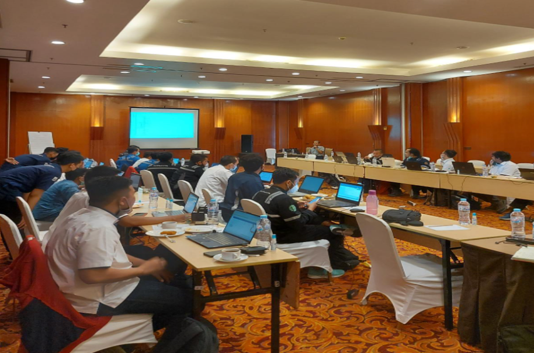
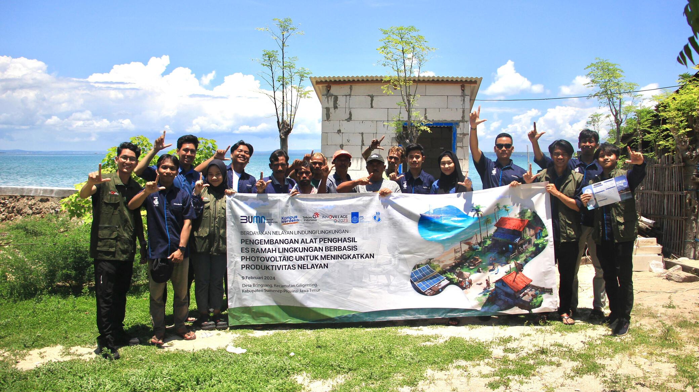
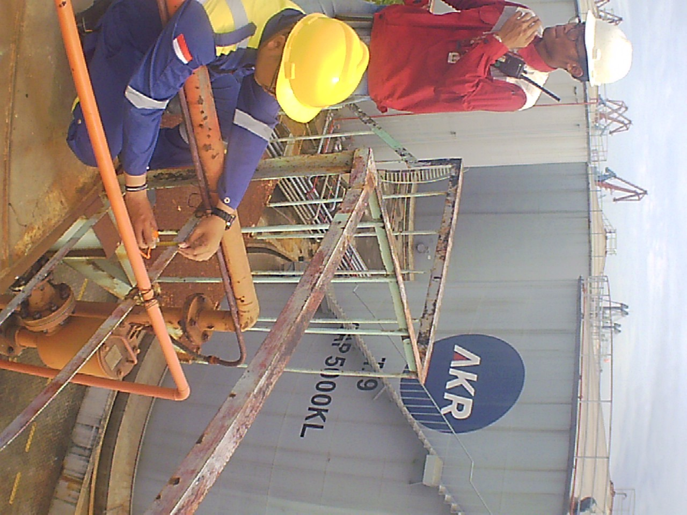
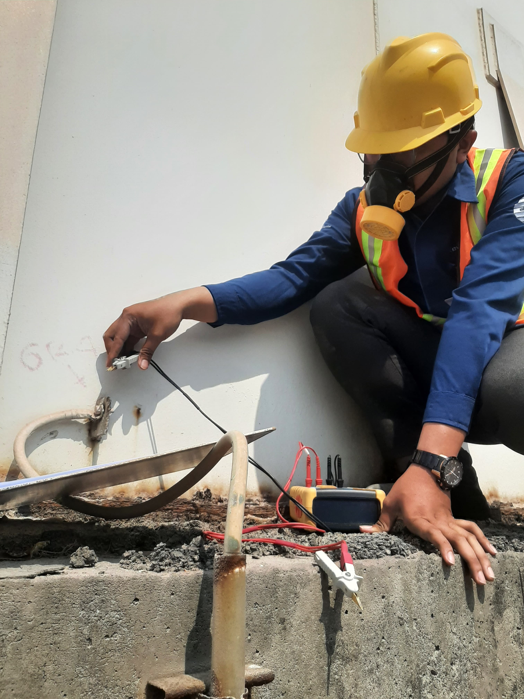
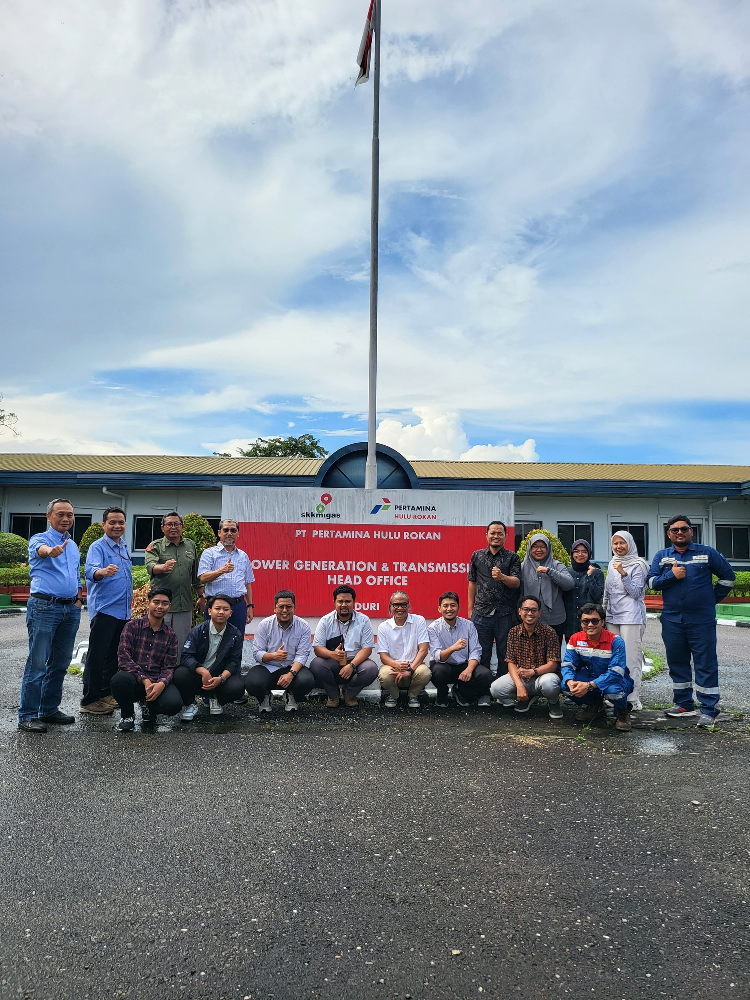
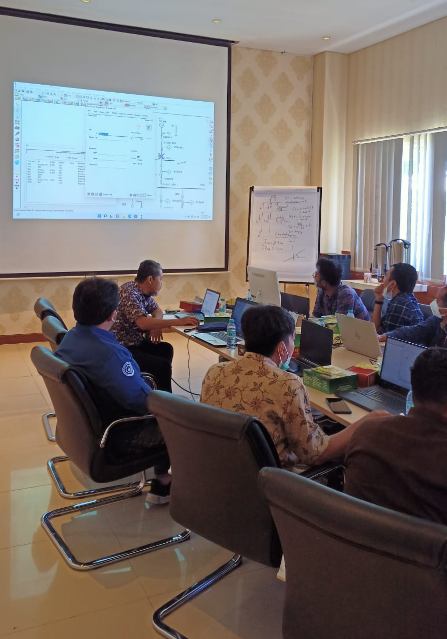

PKM LIPIST
1. PKM VGK-Graha Vidyapeetha: Integrasi Mixed Reality dan Interior Ruang Bagi Anak Penderita Autism Spectrum Disorder untuk Mendorong Perkembangan Kecerdasan yang Optimal
2. PKM GFT-NuWaste: Smart Underground Waste Management and Collection System dengan Konsep Autonomous Maglev Capsule Transportation pada Kawasan Ibu Kota Nusantara
3. PKM GFT-Implementasi Gravity Battery sebagai Solusi Penyimpanan Energi Listrik Berkelanjutan di Ibu Kota Nusantara
4. PKM KC-Garbage Disposal Sebagai Pembangkit Listrik Alternatif Tenaga Sampah (PLTSa) Berskala Rumah Tangga yang Efisien dan Terjangkau
5. PKM KC-Implementasi Smart Agriculture dalam Monitoring dan Controlling Keberhasilan Panen Melalui Autonomus Drone Sprayer Berbasis Internet of Things
6. PKM KI-Inovasi Automatic Soybean Grinding and Separator Machine dengan Metode Rotating Shaft Menggunakan Sistem Monitoring ESP32 Untuk Optimalisasi Pembuatan Tahu
7. PKM K-CaterEase Nusantara: Aplikasi Catering bagi Usaha Mikro Kecil dan Menengah untuk Meningkatkan Jangkauan Pasar dan Keberlanjutan Bisnis Kuliner Lokal
8. PKM PI-Tribio Tembakau : Solusi Permakultur untuk Meningkatkan Kesuburan Tanah Sawah dan Produktivitas Pertanian di Desa Kalisat, Kab. Jember di Tengah Ancaman Global Boiling
9. PKM PI-Penerapan Teknologi Peragian Kedelai dengan Automatic Packaging Machine sebagai Upaya Optimalisasi Produktivitas dan Kualitas Tempe pada UD Tempe Intan Driyorejo
PKM Lipist

ETAP Training
ETAP

Abdi Masyarakat di Desa Bringsang
Social Project Innovillage 2023 Program Innovillage 2023 merupakan kompetisi Social Project dari PT Telkom Indonesia dengan tema “Empowering Young Sociopreneur for National Development” dan tagline #DigitalUntukSemua. Kompetisi ini tim LIPIST mengusung judul ” BERDAYAKAN NELAYAN, LINDUNGI LINGKUNGAN : PENGEMBANGAN ALAT PENGHASIL ES RAMAH LINGKUNGAN BERBASIS PHOTOVOLTAIC UNTUK MENINGKATKAN PRODUKTIVITAS NELAYAN” di Desa Bringsang, Kecamatan Giligenting, Kabupaten Sumenep Provinsi Jawa Timur.
InnoVillage

Evaluation system load shedding and coordination for protection due to additional power PLN 150KV
Project

Evaluasi dan penambahan penangkal petir
Project

Kajian Teknik Pengembangan Sistem Reliability Centered Maintenance (RCM) terhadap Peralatan Listrik
Studies

ETAP Training
ETAP Training

Social Project Skema Tematik Dana Departemen Program Sosial Project kepada masyarakat
Social Project Skema Tematik Dana Departemen Program Sosial Project kepada masyarakat dengan judul ” PEMBERDAYAAN MASYARAKAT MELALUI TEKNOLOGI MESIN PENGOLAH PUPUK BERBASIS PHOTOVOLTAIC SEBAGAI UPAYA PENINGKATAN HASIL PERTANIAN KELOMPOK TANI DUSUN POJOK, SUKOREJO, KEDIRI” Lokasi : Dusun Pojok, Desa Sukorejo, Kabupaten Kediri.